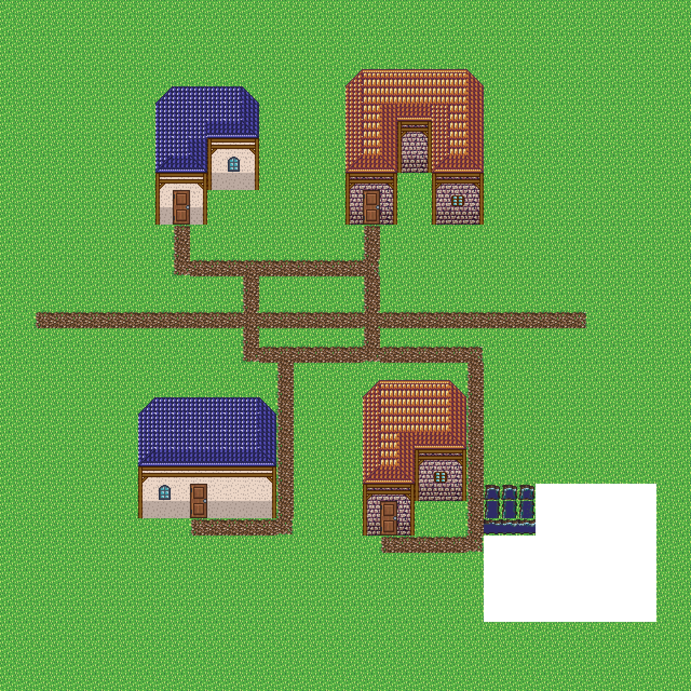
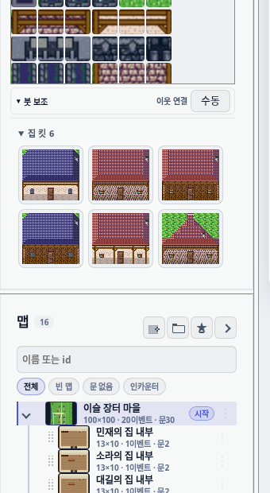
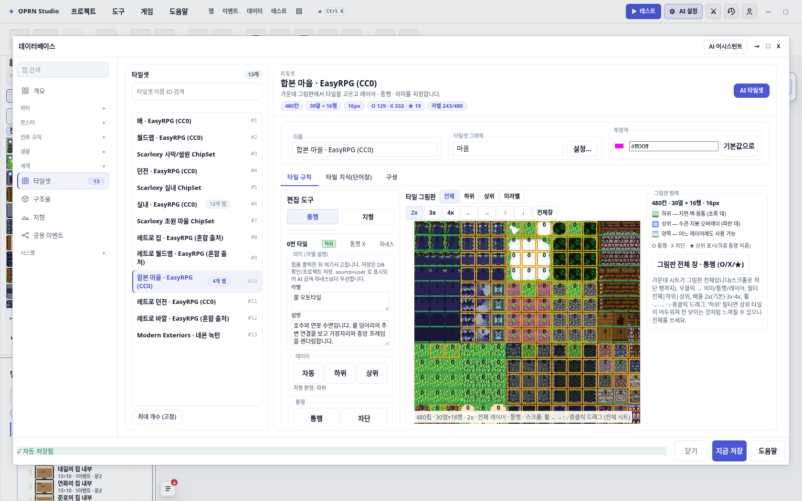
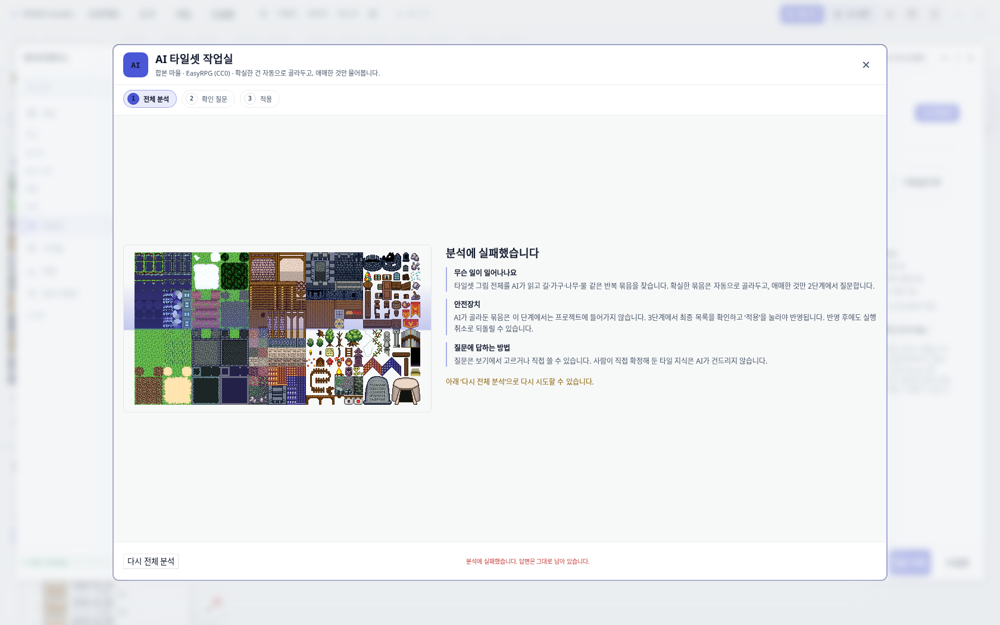
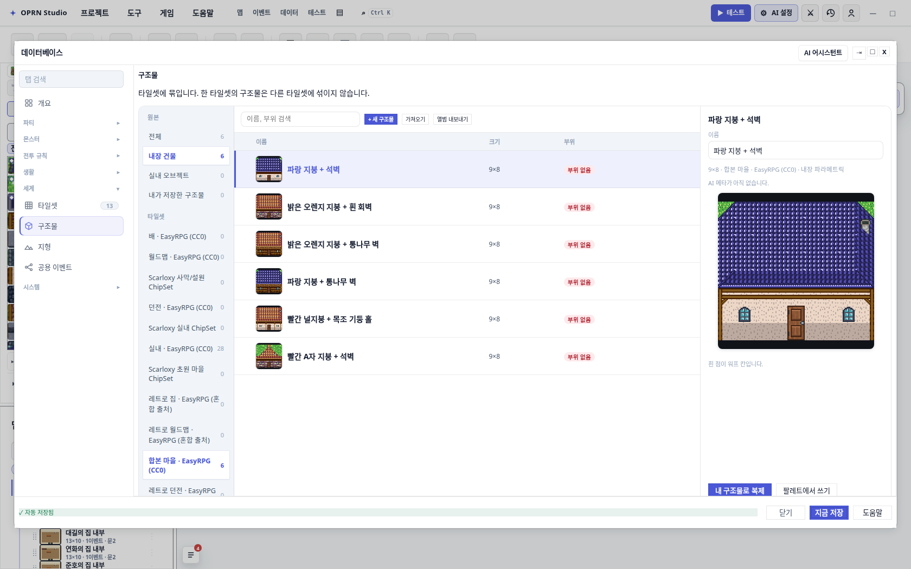

마을 만들기를 데이터베이스로 옮기기
지금 마을은 “한 문장 지시”로만 만들어진다. 집 모양, 벽·지붕 재료, 집 사이 간격, 꽃이 놓일 확률까지 전부 소스 코드 안에 숫자로 박혀 있어서 사용자가 손댈 수 없다. 이 문서는 그 구조를 화면과 코드로 확인한 결과와, 무엇을 어떤 순서로 데이터베이스 탭에 올릴지 정리한 것이다.
1 세 줄 요약
길게 읽을 시간이 없다면 이 세 가지만 알면 된다.
① 마을 만들기 창이 없다
옵션을 골라 마을을 만드는 대화창이 아예 없다. 메뉴에도, 툴바에도, 맵 만들기 프리셋에도 없다. 유일한 버튼인 건축 팔레트의 🏘️마을은 마을을 직접 짓지 않고, 한국어 문장이 미리 채워진 AI 작업 창을 자동으로 띄운다.
buildPalette.ts:181-184② 값이 전부 코드에 있다
집 모양 34종, 벽·지붕 세트 6종, 울타리·문·창문 타일 번호, 길 오토타일 종류가 모두 코드 상수다. 타일셋을 쓸 수 있는지 판단하는 검사도 “뜻이 준비됐나”가 아니라 “이 이미지가 맞나” 한 줄이다.
village/constants.ts · combinedTown.ts:27-29③ 지금 DB의 킷은 안 쓰인다
데이터베이스 「구조물」탭에 집 킷 6종이 들어 있지만, 마을 생성 코드 8,632줄에서 이 킷을 참조하는 곳이 0건이다. 비슷한 두 계보가 나란히 있으면서 서로를 모른다.
src/editor/tools/village/ 12파일


2 무엇이 만들어지나 — 형태 × 재료
집 하나는 두 가지가 곱해져서 나온다. 템플릿은 형태(폭·높이·층수·날개 모양)이고, 킷은 재료(벽 9조각·지붕·창문 타일)다. 지금은 형태 34종과 재료 6종 모두 코드 상수다.

min(3, 목표수), min(8, 목표수, 후보수)).
이 “다양성 목표” 숫자도 사용자가 못 만진다.표본 8채 — 하나씩
같은 문법에서 나온 집들. 지붕 형태(평지붕·A자·박공), 층수, 날개 유무, 벽 재료가 조합으로 갈린다.


여기가 제일 큰 걸림돌이었다 — 지금은 해결됐다. 집 형태가 데이터가 아니라 함수로 되어 있었다.
템플릿마다 wingsAt(x, y)를 들고 있어서 배열을 JSON으로 옮길 수 없었다.
34종 전부가 원점 기준 모양을 그대로 평행이동하는 것뿐이었다.
그래서 날개를 원점 (0,0) 기준 사각형 배열로 선언하고, 시공 좌표는 전개 함수가 만들게 바꿨다.
리팩터 직전 코드로 뽑은 기준선 덤프와 칸 하나까지 대조하는 테스트가 동일성을 고정한다
(0단계, PR #267).
형태 규칙(코드 주석에 못 박혀 있음): 층 구간 높이 ≥ 벽 밴드+2 (1층 5 / 2층 7 / 3층 9 / 낮은벽 4), 폭 ≤ 8,
A자 지붕은 높이 = 벽밴드 + floor((폭−1)/2) + 1. 계약 테스트 test/houseTemplates.test.ts:31-60가
30종 이상·id 유일·전부 빈 맵에 시공 성공·문이 맨 아랫줄·날개가 경계 안을 지킨다.
3 마을을 만드는 길은 어디인가
UI에서부터 거꾸로 따라가 봤다. 결론은 옵션을 주고 마을을 만드는 화면이 없다는 것.



결정론 생성기로 가는 실제 경로
“결정론”은 같은 입력이면 같은 결과가 나오는 코드 경로를 말한다. 이 경로는 지금 AI 도구 호출로만 열린다.
| 경로 | 어디 | 상태 |
|---|---|---|
author_village — 정본 창구 | authorVillageToolDef.ts:52-158 | 활성 |
generate_map (테마 village) | generateMapTool.ts:134-153 | 활성 |
| AI 영역 작업 — “N채 마을” 감지 시 서식 주입 | runRegionTask.ts:392-395 | 활성 |
| 레거시 도구 7종 | village/builder.ts:498-918 | 폐기 예정 · AI에게 숨김 |
개발용 URL 쿼리 ?villageShoppingStreet | devShowcaseProjects.ts:42-43 | 개발용 |
| E2E 테스트 브리지 | editorToolHook.ts:160-161 | 테스트용 |
설정이 저장되지 않는다. author_village의 입력 명세에는 기본값 항목이 하나도 없다.
지정하지 않은 값은 하류 빌더가 씨앗값으로 알아서 정한다.
즉 같은 지시를 두 번 줘도 사용자가 볼 수 있는 설정 기록이 남지 않는다. 필수는 대상 영역·집 개수(1–32)·개수 정책 셋뿐이고, 모르는 형태 id는 거부가 아니라 경고 후 조용히 제거된다.
4 마을이 쓰는 재료는 “뜻”이 아니라 “번호”다
마을 코드는 “흙길”을 칠할 때 360번 타일을 찍는다. 이름이 아니라 좌표 번호다. 그래서 텍스처가 바뀌면 같은 번호가 전혀 다른 그림이 된다.


실패가 조용하다. 마을 코드가 한국어 라벨을 넘기는 곳은 딱 두 군데다 — 소품 배치와 지형 채우기(“장작 더미”, “침엽수”, “물”). 해석에 실패하면 소품 배치 코드는 오류를 던지지만, 마을 코드가 그걸 경고로 삼켜서 0개 배치로 넘어간다.
결과: 뜻 정보가 부족한 타일셋에서는 소품만 슬그머니 사라지고, 집·길·울타리·문은 원시 번호로 계속 찍힌다. 사용자는 왜 빈 마당이 나왔는지 알 수 없다. decor.ts:614-622
참고로 타일 역할 목록에는 building · castle · fence · roof · terrain · water · wall · prop이 있는데
길(road)과 바닥(floor)이 없다. 도로도 바닥도 전부 terrain이다.
마을 재료를 이름으로 묶으려면 이 축이 먼저 필요할 수 있다.
5 타일셋 탭에는 이미 “뜻”이 있다. 마을이 안 볼 뿐
타일마다 라벨·설명을 붙이는 화면, 타일을 묶어 어휘로 쓰는 화면, 오토타일 그룹 화면이 이미 다 있다. 그런데 마을 코드 전체에서 이들을 참조하는 곳이 0건이다.


source=user로 표시되고 AI 추정보다 우선한다.
마을이 번호를 버리려면 이 라벨 243/480이 480에 가까워져야 한다.

저장된 오토타일은 0개인데 실제로는 11개로 동작한다. 합본 마을 타일셋에 저장된 오토타일 그룹은 0개다. 그런데 실행할 때 “이 이미지가 기본 텍스처면” 내장 11종(흙길·모래·포석·경작지·눈·관목·키큰풀·석재광장·자갈광장·어둠 2종)을 섞어준다.
문제는 이 대체 판정식이 마을 생성기의 통과 조건과 똑같은 이미지 비교 한 줄이라는 점이다. 다른 타일셋으로 갈아타면 생성기 통과와 오토타일 대체가 동시에 죽는다. defaults/autotileGroups.ts:245-255 · combinedTown.ts:27-29

지금 지원 타일셋의 뜻 커버리지
위키 실측표(2026-08-20) 기준: 실내 칩셋 480/480 라벨·오토타일 10, 던전 478/480·13, 합본 마을 207/480·오토타일 0, 나머지 7종 전부 0. 다만 현재 에디터 배지는 243/480을 보여준다 — 그 사이 36칸이 라벨링된 것으로 보인다. 계획을 세울 때는 위키 숫자가 아니라 배지 값을 기준으로 삼는 게 맞다. 어느 쪽이든 절반 이하다.
6 지금 데이터베이스에 있는 탭 — 어디에 얹을까
새 탭을 만들기 전에, 이미 있는 표면이 마을 데이터를 받을 수 있는지 하나씩 확인했다.





| 표면 | 담고 있는 것 | 마을 데이터를 받을 수 있나 |
|---|---|---|
| 타일셋 | 타일별 통행·뜻 라벨, 오토타일, 팔레트 프리셋 | 재료 결속의 상류. 여기 라벨이 채워져야 마을이 번호를 버릴 수 있다. 마을 설정 자체를 담기엔 부적합 |
| 구조물 | 타일셋별로 굽힌 9×8 래스터 킷 | 부적합. 형태가 파라메트릭이 아니라 굽힌 그림이고, 타일셋에 묶여 있어 배치 규칙을 못 담는다 |
| 지형 | 전투 이동 규칙·전투 배경·발소리 | 부적합. 전투 스튜디오 소속. 여기 얹으면 뜻이 충돌한다 |
| 공용 이벤트 | 재사용 이벤트 | 무관 |
그대로 베껴 쓸 관례 네 가지
- 내장/사용자 축은 출처로 판정. 구조물 탭은
source === "user"만 편집 허용한다. “누가 가르쳐줬나”로 판정하면 내장 킷을 내보냈다 다시 가져올 때 영구 잠긴 유령이 생긴다는 주석이 붙어 있다. - 복제는 굽는다. 사본이 원본을 참조하지 않고 값을 펼쳐 새 레코드로 넣는다. 코드 상수가 바뀌어도 사본은 그대로다.
- 자동 생성은 0건. 어떤 자동 경로도 사용자 레코드를 만들지 않는다. AI 초안은 폼만 채우고, 사람이 「수락」을 눌러야 저장된다(위 AI 작업실 화면과 같은 규칙).
- 공용 조립 부품을 쓴다.
databaseWorkspace.ts의 껍데기·목록·상세·카드 부품으로 조립한다. 구조물 탭은 이걸 안 쓰고 손으로 조립한 예외이고, 그 파일 머리 주석이 손조립에서 나온 사고 다섯 건을 열거하고 있다. 타일셋·진영 쪽을 본받고 구조물 쪽 손조립은 복제하지 않는다.
상태 관리: immer도 훅도 없다. 읽기는 store.getCurrent(), 쓰기는 store.update(draft => …)이고
내부는 구조 복제 + 정규화다. 열린 모달은 프레임 디바운스와 편집 중 스킵으로 포커스를 지키므로,
키 입력마다 저장을 발화해도 안전하다.
7 제안 — 「마을」탭 하나, 섹션 셋
새 탭 하나를 「세계」그룹의 구조물과 지형 사이에 넣는다. 구조물 탭을 늘리지 않는 이유는 두 가지다 — 구조물은 타일셋에 묶여 있는데 마을 배치 규칙은 그렇지 않고, 구조물의 킷은 굽힌 그림인데 마을에 필요한 건 숫자로 조절되는 형태다.
집 템플릿 — 형태 카탈로그
형태 34종 + 사용자 템플릿. 폭·높이·층수·낮은벽·지붕 데크·재료 세트·날개 목록을 필드로 노출하고, 인스펙터에 실제 시공 미리보기를 붙인다. 내장은 읽기 전용, 「내 템플릿으로 복제」로만 편집. 재료 세트는 참조만 하고 구조물 탭 레코드와 중복 저장하지 않는다.
배치 프리셋 — 지금 몰래 정해지는 값들
집 수, 광장 크기, 집 사이 여백, 길 폭과 굽이 정도, 마을 레이아웃, 나무 밀도, 꽃·조각상 확률, 품질 검사 임계값을 이름 붙은 레코드로 승격한다. 여기서 “설정이 저장되지 않는다” 문제가 풀린다 — 쓴 프리셋 id를 결과 설계도에 남기면 재현이 된다.
재료 결속 — 번호를 이름으로
마을이 쓰는 재료 슬롯(길·모래·포석·잔디·울타리·문·창문·나무·물)을 원시 번호가 아니라 타일셋의 라벨/그룹 참조로 잇는다. 슬롯별 상태를 승인 / 약함 / 없음으로 표시한다. 다른 타일셋을 해금하는 유일한 길이고, 여기가 채워지면 이미지 비교 통과 조건을 준비도 검사로 바꿀 수 있다.
담지 않는 것
- 시공 결과. 완성된 설계도는 맵에 남는 산출물이다. DB 탭은 입력만 다룬다.
- 타일별 라벨 편집. 타일셋 탭의 일이다. 재료 결속 섹션은 빈 슬롯을 가리키고 타일셋 탭으로 보낸다.
- NPC 인물 데이터. 생활·캐릭터 쪽 계보다. 마을 탭은 기본 NPC 수와 이격만 갖는다.
- 실행 버튼. 옵션 폼과 실행은 맵 편집기 쪽 UI로 남긴다. DB는 프리셋 저장소다.
라벨 충돌은 미리 정해야 한다. 「마을」탭은 사이드바에서 「지형」바로 위에 서는데, 그 지형은 전투용이다. 이미 있는 혼선이지만 마을 탭이 붙으면 “지형 = 마을 지형?” 오해가 커진다.
탭 추가와 함께 전투 지형 탭을 전투 규칙 그룹으로 옮기는 걸 같이 검토할 만하다. 별건이지만 같은 사이드바를 건드린다.
8 막는 것 다섯
| 문제 | 영향 | 해법 |
|---|---|---|
| 1. 집 형태가 함수다 해결 · PR #267 |
섹션 1을 막았다 | 완료. 원점 기준 날개 배열로 정규화하고 전개 함수를 하나 뒀다. 리팩터 직전 덤프를 기준선으로 삼아 원점 3곳에서 대조하고, 카탈로그 규칙(폭 상한·열 구간 최소 높이·bbox 일치·A자 높이 공식)을 테스트로 못 박았다 |
| 2. 타일셋 통과 조건이 이미지 비교 한 줄 | 섹션 3의 목적을 무의미하게 만든다 | 결속이 채워진 타일셋을 허용하도록 준비도 기반으로 교체. 검사 함수는 이미 있다 |
| 3. 오토타일이 프로젝트 설정을 우회 | 사용자가 만든 그룹이 마을에 반영 안 됨 | 마을 코드의 내장 그룹 직접 가져오기를 프로젝트 조회 함수로 교체 |
| 4. 합본 마을 라벨 절반, 오토타일 저장 0 | 결속 섹션이 처음부터 반쯤 빈 상태로 보인다 | 번들 타일셋 라벨 보강은 별 트랙으로. 결속 섹션은 빈 슬롯을 정직하게 표시하고 번호 대체를 유지 |
| 5. 마을 계획이 계약 없는 필드에 쌓인다 | 검증·이관 없이 프로젝트 JSON에 축적 | 타입에 선언하고 검증·참조검사에 넣거나, 세션 저장소로 밀어내 직렬화에서 제외. 새 탭 데이터를 같은 방식으로 붙이지 않는 게 최소 조건 |
5번을 조금 더. 마을 계획 코드가 프로젝트 객체를 캐스팅해서 선언되지 않은 필드에 계획을 붙인다. 직렬화가 객체 전체를 문자열로 만들고 검증기가 통째로 복제하니까, 저장하고 불러와도 살아남는다 — 실제로 데모 프로젝트 파일 안에 그 필드가 들어 있다.
검증도 이관도 없는 데이터가 프로젝트 파일에 조용히 쌓이는 상태다. villagePlan.ts:353-372
9 순서 — 안전한 절단면은 0→1
데이터화 — 화면 변화 없음 완료 · PR #267
형태 34종을 선언형 데이터로 옮겼다. 생성기는 여전히 같은 표면(wingsAt)을 쓰지만
모양이 데이터가 됐다. 재료 킷 6종은 이미 순수 데이터여서 옮길 게 없었고,
테스트가 JSON 왕복으로 그 사실을 못 박았다.
「마을」탭 — 읽기 전용 카탈로그
탭을 등록하고 형태 목록을 띄운다. 인스펙터 미리보기 + 「내 템플릿으로 복제」. 공용 부품으로 조립하고 구조물 탭의 출처 판정을 그대로 쓴다. 개수 배지는 사용자 템플릿 수(0이면 배지 없음).
배치 프리셋 — 쓰기 시작
프리셋 섹션을 붙이고 생성 도구 입력에 프리셋 id를 추가한다. 빌더의 씨앗 기반 기본값이 프리셋 값을 존중하도록 바꾸고, 쓴 프리셋 id를 결과 설계도에 기록해 재현 가능하게 만든다. 형태 + 재료 → 구조물로 굽는 다리도 여기서 놓을 수 있다.
재료 결속 — 타일셋 해금
결속 섹션을 붙이고 마을 코드의 원시 번호·오토타일 직접 가져오기를 결속 조회로 교체한다. 통과 조건을 준비도 기반으로 바꾼다. 타일 역할에 길 축이 필요한지 이 단계에서 판단한다.
0단계만 끝내도 근본 제약이 사라진다. “형태가 함수라서 DB로 못 옮긴다”가 없어지고, 1단계는 쓰기 없이 탭 골격과 테스트 배선만 검증한다. 실질 위험은 3단계에 몰려 있다.
10 새 탭 추가 체크리스트
가장 최근 실사례가 진영 탭이지만, 그 커밋은 6그룹·SVG 아이콘 개편 전이라 항목이 더 적었다. 아래는 현재 코드 기준이다.
필수 — 빠뜨리면 컴파일·테스트가 잡아준다
| 파일 | 무엇을 |
|---|---|
panels/database.ts | 탭 유니온 · 탭 메타 배열(한국어 라벨의 유일한 출처) · 그룹 배치 · 개수 계산 · 렌더 분기 |
panels/databaseTabIcons.ts | 아이콘 엔트리. 전탭 필수 맵이라 누락은 컴파일 에러. 22×22, 색 리터럴·이모지 금지 |
새 panels/databaseVillageView.ts | 렌더 함수. 공용 조립 부품 사용 |
test/databaseSidebarNav.test.ts | 기대 탭 목록에 순서까지 정확히 삽입 + 개수 리터럴 2곳 |
test/databaseSidebarKeyboard.test.ts | testid 맵 |
test/databaseTabIcons.test.ts | 개수 리터럴 2곳 |
test/e2e/oprn-database-helpers.ts | 탭 명세에 라벨·슬러그·testid |
상황에 따라
- 탭 전용 CSS는 뷰 파일에서 가져오는 게 최근 관례다. 추가하면 CSS 예산 게이트를 통과해야 하고, 기준선 저장 옵션은 쓰지 않는다(래칫을 영구히 풀어버린다).
- 레코드를 다루는 탭이면 AI 컨텍스트용 컬렉션 목록에도 등록한다. 탭 라벨은 자동으로 실린다.
- 초보 모드 6탭에 넣을 경우만 공용 탭 id 목록과 모드 테스트를 함께 수정한다.
- 스키마를 추가하면 정규화 화이트리스트 · 참조검사 · AI 도구 스키마를 같이 손본다.
- 위키
openwiki/editor-database.md에 절 추가 — 안정 id/testid, 소속 그룹과 순서, 편집하는 필드와 하지 않는 필드, 개수 산식, 스냅샷 정책, 커버리지 테스트. 검증 명령이 있다. 견본은 구조물 탭 절.
이 영역이 이미 터뜨린 함정
- 사이드바 DOM은 평면이다. 그룹 접기는 형제 요소의 숨김 토글이고 탭 검색이 자식들을 직접 걷는다 — 탭을 컨테이너로 감싸면 둘 다 깨진다.
- 요소 생성 헬퍼가 텍스트를 먼저 넣고 자식을 나중에 붙인다 → 아이콘+라벨은 자식 배열로만 넣는다.
- 그룹 헤더는 DIV여야 하고, 접기 화살표는 CSS 가상요소여야 한다(텍스트 단정 때문).
- 모달 창 크기는 선택자 하나에서만 선언한다. 탭 콘텐츠 쪽에서 다시 선언하면 탭 전환 때 창이 튄다 — e2e가 모든 탭을 3해상도로 걸으며 차이 0을 강제한다.
- 탭 간 이동은 전용 전환 함수만 쓴다. 모달을 다시 여는 방식은 규칙 위반이다(변경 기준선·선택 상태 소실, 리스너 누수).
- 상세 폼 표시 위치를 잘못 잡으면 스크롤 컨테이너가 둘 생긴다. 스크롤러는 하나뿐이다.
이미 조용히 빠진 사례가 있다. e2e 헬퍼의 탭 명세는 29개인데 사이드바 유닛 테스트는 30개다. 진영 탭이 모달 크기 스윕과 감사 매트릭스를 한 번도 지나지 않는다.
유닛 테스트가 그 배열을 참조하지 않으니 자동으로 잡히지 않는 종류의 누락이다. 마을 탭도 같은 식으로 빠질 수 있으니 작업할 때 같이 고치는 게 좋다.
11 확인하지 못한 것
templates.json을 만든 스크립트를 찾지 못했다. 내용이 코드 함수를 원점에서 펼친 것과 정확히 일치하는 건 확인했지만, 생성 경로는 추정이다. 그 디렉터리 전체가 git 추적 밖이다.- 빌드·테스트를 실행하지 않았다(읽기 전용 조사). 줄 번호는 HEAD
d7cd370a기준이고 이 워크트리는 다른 세션과 공유되므로 어긋날 수 있다. - 마을 계획 필드가 실제 원격 저장 왕복에서도 살아남는지는 직렬화 코드로만 추론했다. 라이브 왕복은 확인하지 않았다.
- 「마을」이라는 탭 이름이 최종안인지는 결정 사항이다. 전투 지형 탭과의 혼선을 어떻게 정리할지에 따라 달라진다.
- AI 타일셋 작업실 스냅샷은 분석이 실패한 상태다. 성공 시 2·3단계 화면은 보지 못했다.